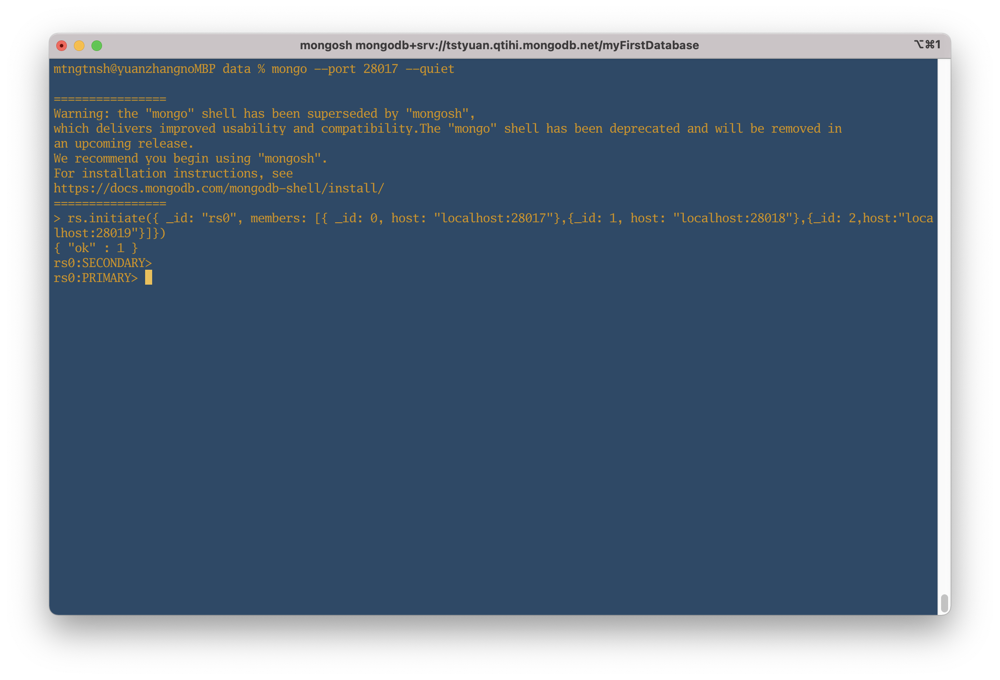
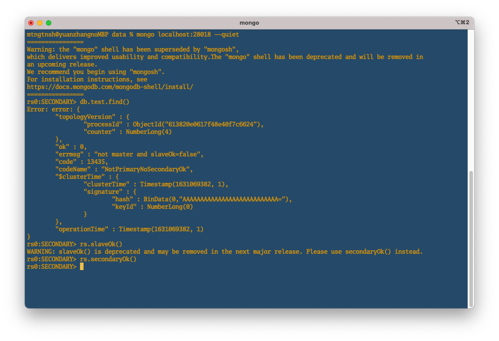
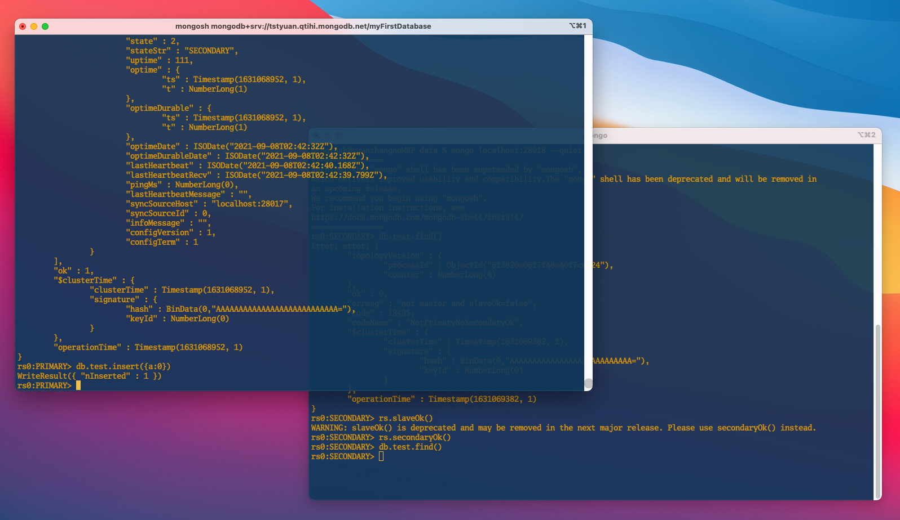
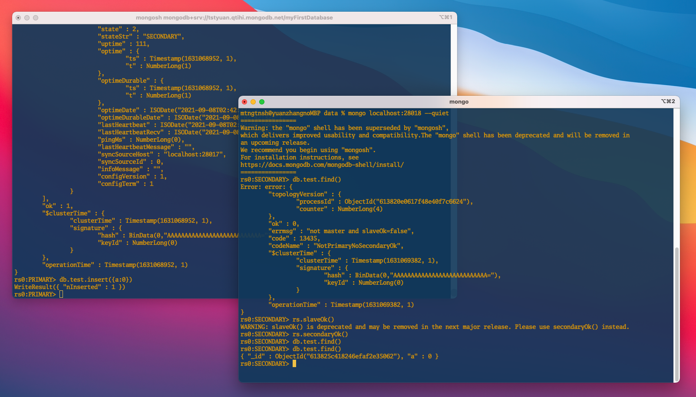
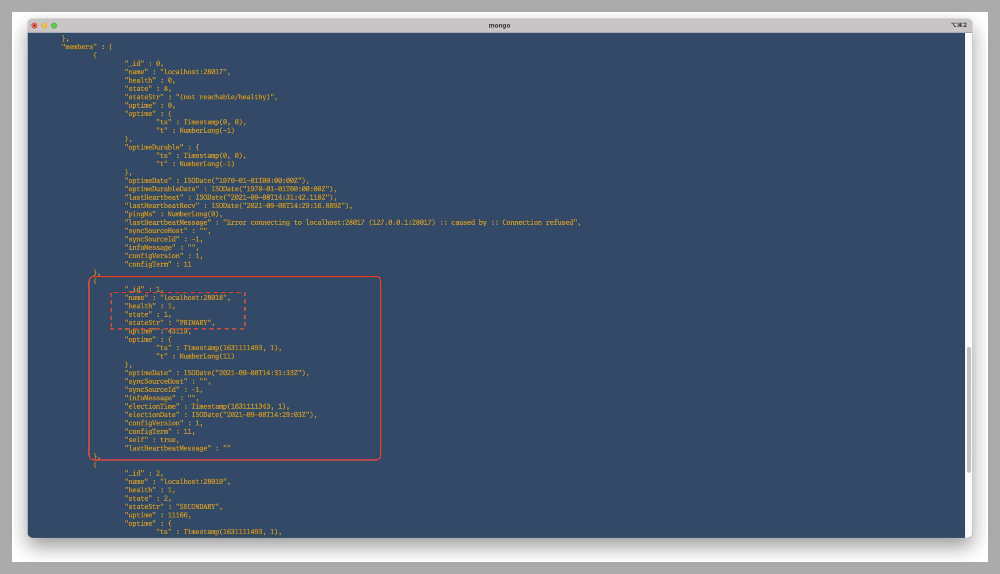

MongoDB - Replication#
なぜレプリケーションをセットするのかを、本メモでは割愛する。 インターネット上、同じようなセットアップに関連する情報は多々存在しているが、実際に手を動かしてみて、少し異なるところがあったので、自分がやりやすい方法をまとめる。
ローカル環境にMongoDBを3つ起動してレプリケーションをセットアップする#
環境:
MongoDB: 5.0.2
MacOS: Big Sur 11.5.2
1. データファイルを格納するためのフォルダを作成#
データファイル格納用フォルダ用に data フォルダーを作成し、さらにその配下に3つインスタンス用のデータファイル格納用フォルダ(db1, db2, db3)を作成する。
mkdir -p db{1,2,3}
2. 設定ファイル(mongod.conf)を作成#
MongoDBの設定ファイル(mongod.conf)のオプションについては、MongoDBの公式ドキュメントを参照。 db1, db2, db3はそれぞれ作成するのが必要。
ディレクトリ構成#
|data
|--db1
| |--mongod.conf
|--db2
| |--mongod.conf
|--db3
| |--mongod.conf
ポート番号#
下記で設定する。
db1: 28017
db2: 28018
db3: 28019
設定ファイルにの内容#
db1用のmongod.confはこの内容で設定している。
systemLog:
destination: file
path: {usr}/data/db1/mongod.log
logAppend: true
storage:
dbPath: {usr}/data/db1
net:
bindIp: 0.0.0.0
port: 28017 # ポート番号
replication:
replSetName: rs0 # レプリカセット名:rs0
processManagement:
fork: true
db2, db3 は上記の設定を各自のフォルダにコピーして、path、dbPath、portをそれぞれ修正する。
3. 設定ファイルを適用#
下記のコマンドで設定ファイルを適用する。
mongod -f {DBディレクトリ名}/mongod.conf
db1のmongod.confを適用する。
mongod -f db1/mongod.conf
設定ファイルの適用ができた場合、下記のようなメッセージが表示される。
about to fork child process, waiting until server is ready for connections.
forked process: 87472
child process started successfully, parent exiting
db2, db3 も同様に適用する。
適用してから、稼働状況をさらに確認したいなら、psコマンドでも見てみよう。
ps -ef | grep mongod
4. インスタンスに接続#
設定ファイルが適用できたら、下記のコマンドで db1 にアクセスする。
mongod --port 28017 --quiet
※ --quietは、接続情報を簡潔に表示されるオプション。
1) rs.initiate()でレプリカセットのメンバーを追加#
参照：rs.initiate()について rs.initiate()は、新しいレプリカセットの設定時、初期化するメソッド。 rs.add()でも使えるが、便利のため、rs.initiate()でセットするとき、db1, db2, db3のホスト情報を``members`という設定フィルドに追加した。
rs.initiate({ _id: "rs0", members: [{ _id: 0, host: "localhost:28017"},{_id: 1, host: "localhost:28018"},{_id: 2,host:"localhost:28019"}]})
上記のコマンド叩いた結果、
{ "ok" : 1 }
 上図から、
上図から、
rs0:SECONDARY>
になっている。
もう一回Enterすると、
rs0:PRIMARY>
に切り替える。
ここまでに進んできて、すでに”rs0”というレプリカセットのメンバー(db1)にアクセスできた。

PRIMARYやSECONDARYは何ものかは、こちらのページ「Replica Set Members」を参照。
The replica set can have at most one primary. If the current primary becomes unavailable, an election determines the new primary.
初期化されてから、デフォルトの設定で SECONDARYと認められる。上記の説明から、現在のレプリカセットは、PRIMARY(1つ)、SECONDARY(2つ)があると明らかにした。
次の動作を検証するため、もう一回Enterすると、db1をPRIMARYに変更した。
そのため、現時点で、db1がPRIMARYとして設定していて、まだログインしていないdb2, db3はSECONDARYになった。次のステップで、各メンバーのstateStrで確認できる。無論、db1 が一時的に死んでしまった場合、db2, db3のどれかがPRIMARYに変更される。
2) メンバーの追加状況を確認#
こちらのコマンド確認する。
rs.status()
上図で、db1 のstateStrが”PRIMARY”になっているのがわかった。
5. レプリカセットの稼働状況を確認#
db1 が “PRIMARY”である限りなり、書き込みと読み込みができるので、db1 にデータを挿入してみて、db2 側から様子を確認する。 本メモは、”Arbiter”というメンバーをスキップしている。 ※時間がある時こちらのドキュメントをチェックする→”Arbiter”について
メンバー db2 にアクセスする#
mongo localhost:28018 --quiet
上記のコマンドでdb2 にアクセスしてから、db1の内容が見れるのかを、下記のコマンドで試す。
db.test.find()
しかし、
"errmsg" : "not master and slaveOk=false",
というエラーメッセージが返された。
そのメッセージは、まだ db1 の slave(奴隷) になってないよ、db1とは知らない人っと理解してもいいから、両方の関係を築き上げよう。
最初は、rs.slaveOk()で試していた。次のリリースで削除されるそうなので、推奨のrs.secondaryOk()で設定できた。

db.test.find()
で もう一回確認してみて問題が解決した。
メンバー db1 にデータを追加して、db2 から確認する。 db1にデータをinsertする。
db.test.insert({a:0})

即座に、db2 側で確認する。

db1 で insert した{a: 0}が db2 側で見れた！
ローカル環境だから、迅速と感じだが、レプリカセットのメンバーが遠距離であっても、数十ミリ秒程度の遅延しか出ない噂がある。。
db1 を kill してから db2 が昇格#
psで db1 のプロセス番号を確認し、kill しよう。
今回は auxを使ってみる。 ※ef派とaux派がこれからもpeace&loveで暮らしていくように。余談→あなたはPS -EF派なのか、AUXF派なのかをちょっとだけまとめてみた
ps aux | grep mongod
kill {process_id}
しばらく待ってから、db1 が稼働していないことが確認できる。
db2がPRIMARYに昇格されることも確認できる。

おまけ - db1を再起動したら、どうなるのか?#
db1がまたPRIMARYに昇格されるか、そのままSECONDARYとしているのか？
db2が 死んでいない限り、db1 が SECONDARYとして生きていくはず。。
以上はレプリケーションをセットアップする方法。
次は、MongoDBのシャーディングを学習する予定なので、ネットから調べてきた1台の物理マシンにポートを分けて数台のサーバを立ち上げるパターンではなく、数台のVM(シャード)を作成してシャーディングしてみたい。
Sharding is a method for distributing data across multiple machines .
出典:Sharding